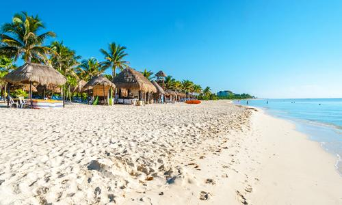

PLAYA DEL CARMEN:
- Se ubica a lo largo de la costa caribeña de la Riviera Maya, en la Península de Yucatán. Pertenece al estado de Quintana Roo y es famosa por sus playas bordeadas de palmeras y los arrecifes de coral. La Quinta Avenida peatonal se extiende en paralelo a la playa, con cuadras de tiendas, restaurantes y clubes nocturnos que van desde bares relajados hasta clubes de baile.

Actividades:
- Recorrer la 5ta avenida
- Xcaret
- Viajar en ferrie
- Cenotes
Links de agencias para cotizar viaje: